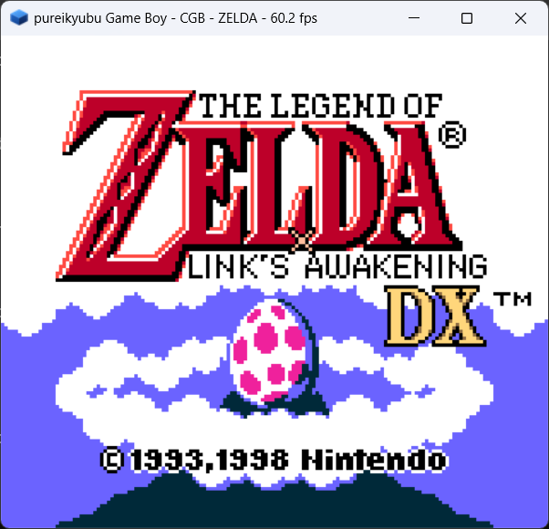

pureikyubu 1.9 — заметки о релизе
Версия 1.9 — релиз новых возможностей. У эмулятора появляется вторая машина — написанное с нуля ядро Game Boy Advance и Game Boy, — второй путь рендеринга — полная программная реализация графических блоков Flipper, — а также новый отладчик, локальный MCP-сервер для LLM-агентов, профилировщик аппаратных интерфейсов, headless-сборка и рекомпилятор DSP. Весь исходный код был проверен на данные, которые он загружает, а отладочный интерфейс теперь говорит на UTF-8. Что касается совместимости: вступительный ролик Metroid Prime стал в несколько раз быстрее и релиз доходит до титульного экрана игры, Super Mario Sunshine загружается и проигрывает вступление, а такие игры, как Star Wars Rogue Squadron III, Super Monkey Ball 2, Prince of Persia и Soul Calibur II, получают своё изображение.


На этой странице
Главное
- Встроенный Game Boy Advance и Game Boy.
src/gba— это вторая машина, написанная по публичным спецификациям железа (ARM Architecture Reference Manual для ARM7TDMI, GBATEK для периферии GBA, Pan Docs для Game Boy). У неё собственный свободный boot ROM, анимация которого рисует логотип pureikyubu, собственный SDL2-интерфейс и собственный тестовый стенд;pureikyubu --gba game.gbaзапускает картридж, аpureikyubu game.gbc— машину Game Boy внутри него. Она нужна, чтобы быть партнёром по GBA Link и заменой Game Boy Player для стороны GameCube. - Программный конвейер GFX. У графических блоков Flipper (XF, SU, RAS, TX, TEV
и PE) теперь есть реализация на CPU рядом с реализацией на OpenGL. Она рисует в настоящий
массив памяти EFB и настоящий TMEM, а движок копирования превращает готовый кадр в XFB,
который сканирует видеоинтерфейс — без единого контекста OpenGL.
hardware.GFX_PIPELINEи командаgxpipelineпереключают конвейеры на ходу. - Новый отладчик (DebugUI2). Собственный поток, собственное окно OpenGL 3.3 и
папка сессии на каждый запуск; каждая панель — это Markdown команды JDI, поэтому весь Flipper
— тринадцать вкладок от Gekko до профилировщика — и обе портативные машины можно разбирать
прямо на месте. Открывается через
Debug → Test New Debugger, сессию запускает и останавливаетF2. - MCP-сервер.
pureikyubu --mcpзапускает эмулятор как локальный сервер Model Context Protocol: каждая команда отладочного интерфейса становится инструментом (tool), который может вызвать LLM-агент (около 150 до загрузки машины и около 170 после), по JSON-RPC через stdin/stdout. - Профилировщик аппаратных интерфейсов. Строка состояния могла сказать, как быстро работает процессор; профилировщик говорит, двигаются ли данные вообще и где именно: шина 60x, шина Flipper/Splash, FIFO интерфейсов PI и CP, буфер накопления записи, каждый движок DMA, вход аудиомикшера, примитивы GFX, кадры VI — за эмулируемую секунду.
- Headless-сборка.
uinull.cppи null-слой GFX превращают эмулятор в консольное приложение без окна — для бенчмарков, прогонов тестов и MCP-сервера; headless-цель Visual Studio вдобавок рисует настоящим контекстом OpenGL в скрытом окне, поэтому кадры по-прежнему можно считывать. - Рекомпилятор DSP. У ядра DSP появился компилятор базовых блоков, который делит общий эмиттер x86-64 с рекомпилятором Gekko; он в 1.5–1.8 раза быстрее интерпретатора и по умолчанию выключен.
- Аудит безопасности и переход на UTF-8. Около девяноста дефектов, достижимых
через загружаемые артефакты, были найдены и исправлены за небольшим слоем проверок,
--selftestсообщает о сбое запуска вместо бесследного исчезновения процесса, а отладочный интерфейс, консоль и оба интерфейса говорят на UTF-8. - Совместимость. Вступительный ролик Metroid Prime вырос с ~3.5 до ~9–11 кадров в секунду, и прогон доходит до титульного экрана за 100 секунд; Super Mario Sunshine загружается и проигрывает вступление; Super Monkey Ball 2 перестаёт крутиться в ожидании перед первым кадром; Star Wars Rogue Squadron III больше не сбоит, пока его обработчик MMU отображает страницу; диалог карты памяти Prince of Persia читается.
Добавлено
Встроенный Game Boy Advance и Game Boy (задача #388)
- Вторая машина в
src/gba, написанная по публичным спецификациям и не зависящая от стороны GameCube. Ядро Game Boy Advance реализует ARM7TDMI (ARM и Thumb, все семь режимов, исключения иHALT), карту памяти с open bus и задержкамиWAITCNT, LCD (текстовые режимы 0–2, bitmap-режимы 3–5, спрайты, окна, мозаику, смешивание, принудительный blank), четыре таймера, четыре канала DMA, включая тайминги звукового FIFO и захвата видео, клавиатуру, контроллер прерываний, звук (четыре унаследованных канала и два FIFO прямого звука), последовательный порт с эмулируемым кабелем связи, картридж (ROM плюс сохранения SRAM, Flash и EEPROM и порт GPIO/RTC) и сервисные функции BIOS на стороне хоста. - Свободный boot ROM, потому что официальный IPL защищён авторским правом: анимация загрузки —
это эмулируемый ARM-код, собираемый во время выполнения небольшим эмиттером
(
src/gba/gba_armasm.cpp). Каркасный гиперкуб складывается в плоский знак куба pureikyubu, пока снизу вплывает надпись, а затем boot ROM передаёт машину картриджу так же, как настоящий BIOS; образ и его листинг можно выгрузить командойgba_bench --dump-bootrom bootrom.bin. - Машина Game Boy, которую GBA носит внутри (
src/gba/gb_*.cpp): LR35902, LCD DMG/CGB с палитрами, банками VRAM и картой атрибутов CGB, четыре звуковых канала и мапперы MBC1/2/3/5 с батарейными сохранениями, со своим 256-байтовым boot ROM. - Режимы:
pureikyubu --gba game.gba,pureikyubu --gba(без картриджа — link-драйвер SIO из boot ROM, то есть состояние «GBA Link»),pureikyubu game.gbc,--gba-bios bios.binдля настоящего образа BIOS и--no-gba-bootrom, чтобы пропустить BIOS. Окно, звук и ввод берутся из SDL2, а привязки лежат вData/GBASettings.json. - Собственный стенд (
testing/gba_bench), потому что у ядра нет зависимости от SDL, OpenGL или ImGui: юнит-тесты, headless-запуск ROM с хэшами кадров и дампами PNG, измерение скорости и тест связи, который соединяет два экземпляра друг с другом. Через него проходят публичные тестовые ROM под лицензией MIT (jsmolka/gba-tests) — наборы memory, ARM и Thumb сообщают «All tests passed», и именно они нашли зеркалирование VRAM, правила байтовой записи в видеопамять и правило переноса при сдвиге на ноль из регистра. В наборе 263 теста, и все они проходят. - Ядра GBA и GB отлаживаются с хоста, как и всё остальное:
gba,gbaregs,gbacpu,gbamem,gbappu,gbadma,gbtimers,gbsio,gbcartи аналогичныеgb*— это команды JDI, и DebugUI2 строит свои панели для обеих машин.


Программный конвейер GFX (задача #384)
- Полная реализация графических блоков Flipper на CPU в тех же модулях, что и shader-бэкенд, с
приставкой
Softу программных методов: блок трансформации (умножения на матрицы, объединение проекции, освещение по вершинам, генерация текстурных координат, guard-band отсечение и деление с отображением во Viewport в оконное пространство), блок подготовки (сборка примитивов, коэффициенты рёбер, плоскости интерполяции, отсечение по ориентации, zfreeze), растеризаторы (сетка квадратов 2×2 пикселя с 12-битной маской покрытия на квадрат, правило top-left, scissor и перспективно-корректная интерполяция), блок текстур (настоящий TMEM, команды загрузки, кэш тегов, вычисление LOD и точечная, билинейная и трилинейная фильтрация по всем форматам текселей), TEV (до 16 стадий комбинирования, константы K ревизии B, alpha compare, окружение Z-текстуры, туман и финальная функция альфы) и пиксельный движок (настоящий массив памяти EFB, Z-тест, смешивание, логические операции, маски записи и движок копирования). - Конвейер — это переменная конфигурации (
hardware.GFX_PIPELINE, 0 = shader, 1 = программный), переключаемая на ходу командамиgxpipeline soft/gxpipeline shader; выбор сохраняется в настройках. Два пути не делят состояние рендеринга. - Косвенное (bump) текстурирование реализовано в программном TEV с той же арифметикой, что и в shader-бэкенде, поэтому оба конвейера дают одинаковую картинку.
testing/gfx_soft_test.cppуправляет конвейером только через аппаратный API — регистровые пространства XF и BP и вершины в объектном пространстве — и читает результат из памяти EFB и XFB. Прогон демок DolphinSDK рендерит через него те же 87 демок, аreport.pyставит оба конвейера рядом. Конвейер остаётся экспериментальным (см. страницу): у нескольких игр ещё есть дефекты картинки, и по умолчанию используется shader-бэкенд.
Новый отладчик — DebugUI2 (задачи #371, #397, #407)
- Отладчик, который работает в собственном потоке и общается с эмулируемой машиной только через
JDI и Debug API; окно — это отдельное окно SDL, нарисованное через OpenGL 3.3 с атласом
глифов, растеризованным из
Data/DebugUiMono.ttf. - Сессия на каждый запуск
(
Data/Sessions/<image>_<ordinal>, отдельная сущность JDI). Каждая панель — это Markdown-ответ команды, поэтому история сообщений, командная строка и снимок состояния эмуляции доступны для разбора офлайн. - Сессия GameCube содержит тринадцать вкладок: Gekko, три панели процессора (регистры,
дизассемблер, память), девять подсистем Flipper и профилировщик. Отчёты подсистем — это по одной
команде на блок:
airegs,viregs,piregs,miregs,diregs,siregs,exiregs,cpregsиdspstate— каждая отвечает декодированным состоянием своего блока. - Портативная сессия (GBA и Game Boy) — это отдельный интерфейс: её запускает и останавливает
F2, панели приходят из командgba*/gb*, а MCP-клиент, запустившийpureikyubu --gba, получает портативные команды, а не команды GameCube. - Фокус, полосы прокрутки и вкладки: панель под указателем получает фокус, колесо мыши
прокручивает её, панель, содержимое которой не помещается, получает перетаскиваемую полосу
прокрутки, а полоса вкладок переключает сложенные в одном месте подпанели. Попутно исправлено:
DrawTextрисовал каждую строку на высоту выноса выше, счётчики производительности роняли отладчик при открытии без загруженной машины, а состояние прокрутки и вкладок теперь переживает снимки.
MCP-сервер (задача #383)
pureikyubu --mcpпубликует весь отладочный интерфейс как инструменты MCP через stdin/stdout (одно сообщение JSON-RPC 2.0 в строке). Клиент запускает эмулятор своим дочерним процессом, поэтому здесь нет ни порта, ни слушателя, ни аутентификации. См. страницу.- Инструменты — это не второй интерфейс:
src/mcp.cppстроит таблицу инструментов из записейcanзарегистрированных узлов, поэтому команда, добавленная в эмулятор, появляется в списке инструментов сама. Каждый инструмент несёт текст справки, формат вызова и аргументы своей команды; неудачная команда сообщается как неудачный инструмент, чтобы модель могла исправиться. mcp 0/mcp 1запускают и останавливают сервер из консоли отладчика, аMcpRequest <json>прогоняет весь протокол одной командой — так он и тестируется без транспорта. Ответы ограничены 4 МБ, чтобы команда вродеFileLoadне вталкивала двоичный файл в контекст модели.
Профилировщик аппаратных интерфейсов (задача #394)
src/hwprof.*следит за информационно-обменными каналами консоли и сообщает, что каждый из них перенёс за эмулируемую секунду: шина 60x, шина Flipper/Splash, срабатывания прерываний PI, буфер накопления записи, командный FIFO PI→CP, вход аудиомикшера, движки DMA EXI/DI/DSP/AI/ARAM, примитивы и вершины GFX, кадры VI и инструкции, выполненные двумя ядрами. См.wiki/hwprof.md.- Окно измерения — одна эмулируемая секунда, а не секунда реального времени, поэтому канал, переносящий 4 МБ за кадр консоли, сообщает одну и ту же скорость и при 0.2x, и при 5x. Счётчики инструкций — те, что ядра уже ведут, поэтому на горячем пути Gekko ничего не добавляется; парная инструкция DSP считается за одну.
- Три представления: Markdown-таблица
hwprofile, PNGhwprofile imageрядом с сессией и оверлейhwprofile osdв эмулируемой картинке (hwsod 1, хранится какHW_OSD, по умолчанию выключен). Оверлей запрашивает отчёт у отладочного интерфейса и передаёт растеризованную картинку тому бэкенду, который выводит кадр. - В DebugUI2 появляется вкладка Profiler рядом с Registers, Disassembly и Memory.
Headless-сборка (задача #382)
uinull.cpp(переделанныйuisimple.cpp) — это точка входа и весь интерфейс консольной сборки без окна: голый образ или--iplработают до Ctrl+C,--bench <file> [sec]— полноценный headless-режим, а отчёты дублируются в консоль.- Цикл измерения переехал из SDL-интерфейса в
bench.cpp/bench.h, поэтому оба интерфейса измеряют одним и тем же кодом, а системные часы — этоstd::chrono. gfxnull.*прогоняет конвейер GFX через null-слой GL при определённомGFX_NULL, поэтому эмуляция не меняется, ничего не рисуется и драйвер не нужен. Headless-цель Visual Studio вместо этого определяетGFX_OFFSCREENи рисует настоящим контекстом OpenGL в окне, которое никогда не показывается, в собственный framebuffer, поэтомуGFX_DUMP/GFX_EFB_DUMP/gxshotпо-прежнему дают кадры; цель CMakeHEADLESSв Linux оставляет null-бэкенд.scripts/VS2026/pureikyubu_headless.vcxprojвходит в solution, но не собирается командой «Build Solution»;cmake -DHEADLESS=ON ..собирает ту же цель в Linux. Null-бэкенды (audionull.cpp,cuinull.cpp,padnull.cpp) приведены к текущим интерфейсам.
Рекомпилятор DSP (задача #375)
src/dspjit.*компилирует прямолинейные участки инструкций DSP в x86-64. Семантика не переписывается: слово становится одним прямым вызовом (двумя для парного слова) того самого обработчика, который вызываетDispatchинтерпретатора, поэтому декодер и переключатель диспетчеризации выполняются один раз на блок, во время компиляции. Эмиттер общий с рекомпилятором Gekko (src/jit_x64.h).- Блоки перепроверяют полуслова, из которых были собраны, при каждом входе и выходят, как только
меняется поколение кода, появляется отложенное прерывание или взводится точка останова; хуки
аннулирования охватывают
HardReset,LoadIrom/LoadDromи пути DSP-DMA.Dsp16::DoDmaслепо копировал 16-битный размер блока и переполнял массивы памяти DSP (это нашёл AddressSanitizer); теперь передача обрезается по региону, в котором началась. - Рекомпилятор в 1.5–1.8 раза быстрее интерпретатора и по умолчанию выключен:
--dspjitилиdspjit 1в отладчике.testing/dsp_jit_test.cppпроверяет его дифференциально против интерпретатора, включая полный перебор всех 65536 инструкций (дважды), загрузку микрокода через DSP-DMA, круговой рейс прерывания и сброс кэша блоков при изменении потока команд.
Переход на UTF-8 (задача #372)
- Узкая строка проекта — это UTF-8 (командная строка JDI и её аргументы, документы Json, отчёты
и оба интерфейса), а собственный текст эмулятора остаётся
wchar_t.Util::WstringToStringиUtil::StringToWstringтеперь настоящие конвертеры, включая суррогатные пары для кодовых точек вне BMP, а последовательность байтов, не являющаяся корректным UTF-8, переносится как есть, а не отбрасывается. - Токенизатор пропускает метку порядка байтов, с которой может начинаться скрипт; Json хранит
имена членов как UTF-8 (раньше не-ASCII ключ обрезался до одного байта на символ);
Util::FileOpen— это_wfopen_sв Windows иfopenпо UTF-8-имени в остальных системах, поэтому имя файла вне ANSI-кодовой страницы проходит через интерфейс целиком. - Консоль читает и пишет широкие символы (
ReadConsoleInputW/WriteConsoleOutputWв Win32,SDL_TEXTINPUTв SDL-сборке), а командная строка двигает курсор, удаление и поиск слова по кодовым точкам. DebugUI2 тоже декодирует текст панели и командную строку в кодовые точки. Исходники — UTF-8 без BOM, а проекты MSVC передают/utf-8.
Проверка входных данных и аудит безопасности (задача #381)
- Был проверен каждый артефакт, который эмулятор читает из внешнего мира: JSON настроек, образы
Bootrom и ROM DSP, исполняемые файлы
.dol/.elf, образы дисков.iso/.gcm/.rvz, сохранения карт памяти, командная строка, регистры устройств и движки DMA гостя, консольные скрипты и файлы символов.map— и около девяноста дефектов было найдено и исправлено. Повторяющаяся форма — проверка, которая существовала только какassert()и потому не компилировалась в Release. Полный отчёт — на странице безопасности. - Повторяющиеся проверки теперь один слой (
src/verify.h): безопасная от переполнения проверка диапазона и правила для окна в основной памяти, секции образа, чтения с диска, записи FST, передачи карты памяти и строки консольного скрипта. У интерфейса памяти появились аксессоры, знающие длину, рядом со старыми, знающими только начало, поэтому блочное копирование больше не может начаться внутри RAM и закончиться вне её. --selftestпрогоняет всю последовательность запуска без окна и возвращает число неудачных шагов как код выхода, аtesting/startup_cases.shзапускает его на намеренно испорченных файлах настроек и случайных файлах, переименованных в.dolи.rvz.testing/security_test.cppзакрепляет каждое правило, включая два property-теста.
Инструменты: прогон демок DolphinSDK (задача #385)
DVD::MountSdkсобирает в памяти целый образ диска GameCube из папки DolphinSDK, поэтому демки SDK читаются через FST так, как если бы они лежали на диске (File → Mount DolphinSDK as DVD… илиMountSDK <path>вautoexec.cmd).- В
testing/dolphinsdkлежат методика прогона и её скрипты:sweep.ps1запускает список демок и снимает окно вывода,summarize.pyпревращает папку прогона в таблицу, аreport.pyсобирает HTML-отчёт с обоими конвейерами GFX рядом. Были прогнаны 87 демок GX, и найденные ими ошибки исправлены.
Изменено
Gekko и командный процессор
- Рекомпилятор транслирует загрузки полуслова (
lhz/lhzu/lhzx/lhzuxиlha/lhau/lhax/lhaux) через трамплинJitReadHalf. Доля откатов к интерпретатору падает с 13.11% до 3.89% инструкций, и тот же 100-секундный прогон Metroid Prime идёт с 289 до ~301 секунд эмулируемого времени (с 103.1 до ~107 MIPS). Попутно исправлено: эффективный адрес любой индексной формы — это(RA|0), а неRA. - Условие ветвления встраивается в код для форм, которые реально генерирует компилятор (проверка CR или декремент CTR), а условное ветвление больше не завершает блок: путь перехода выходит через эпилог ветвления, а путь без перехода компилируется вместе с блоком, поэтому блок покрывает всё тело цикла. Число выполняемых блоков в секунду падает более чем вдвое, и тот же прогон достигает 131.8 MIPS и 11.64 инструкций на блок (было 103.1 и 4.47).
- События трансляции адресов больше не сбрасывают кэш блоков. Блок «запекает» поток инструкций,
из которого был скомпилирован, а поиск и так сравнивает физический адрес, для которого блок был
скомпилирован, с тем, который даёт текущее состояние
MSR/BAT/SDR1/TLB, поэтомуException,rfi,mtmsrиmtsprдляSDR1/BAT/HID0больше не вызываютInvalidateAll. Вступление Metroid Prime идёт со 131.8 до 181–191 MIPS, число трансляций за 100 секунд падает с 26.8M до 17K, а частота кадров в ролике — с ~5.7 до ~9–11; теперь прогон доходит до титульного экрана за 100 секунд. - Блок чтения CP следует за эмулируемой тайм-базой вместо догадок о прогрессе планировщика
хоста, а таймаут
WPAR, которого на настоящем Gekko никогда не было, убран. Переустановка FIFO (GXSetGPFifo) сохраняет записи, которые эмулируемый читатель ещё не забрал, что устраняет периодический сбой загрузки вступления Metroid Prime. Блок чтения сообщает состояние простоя из текущего состояния кольца, а не как побочный эффект последнего чтения — именно на этом крутилась Super Monkey Ball 2. Команда рисования ждёт все свои данные о вершинах (16-битное число вершин обрезалось до восьми бит), буфер потока рассчитан на самую большую команду, которую может выдать игра, а новая командаcpfifoвыводит регистры FIFO командного процессора.
Единицы времени
- Тайм-база считает такты Gekko (486 МГц), поэтому один тик — это одна инструкция, и декрементер шагает на единицу; старый счётчик по два тика был костылём замедления времён интерпретатора.
- DSP работает на 81 МГц — одна инструкция на шесть тиков тайм-базы, — поэтому его привязка — это обычный счётчик тиков, а пакет измеряется в инструкциях. Именно исправление единиц убрало исключение по странице инструкций в Star Wars Rogue Squadron III, которое возникало, пока его обработчик MMU ещё отображал страницу.
Сборка и структура
- GBA — это отдельный проект: статическая библиотека
GBA, которую эмулятор линкует так же, как SDL2, плюс консольная цельgba_bench. Портативный отладочный интерфейс (gba_debug.cpp) лежит рядом с SDL-интерфейсом — единственным файлом модуля, который говорит на JDI. scripts/VS2026/pureikyubu_headless.vcxprojи опция CMakeHEADLESSсобирают цель без окна;src/jdispecs.cppхранит JSON-спецификации всех узлов JDI в одном месте.
Исправлено
Графика
- Текстурное копирование EFB (задача #378). Текстурное копирование в движке копирования отсутствовало полностью, поэтому каждая игра, рисующая через EFB, брала текстуры, которые оставались нулевыми. Прямоугольник переупаковывается в формат назначения, строки тайлов следуют шагу назначения, и используется собственный 4-битный набор форматов назначения копии (а также плоскость альфы, нужная одноканальным форматам).
- Очистка принадлежит копии. Текстурная копия очищает прочитанный ею прямоугольник; копия экрана очищает весь цветовой буфер в начале кадра. Игра, которая рисует кадр в несколько проходов через движок копирования (Metroid Prime), раньше теряла каждый проход, нарисованный до очистки.
- Привязки текстур TEV. Слово
RAS1_TREFпривязывает пару стадий TEV, и его половины потребляются включёнными стадиями по порядку, а не фиксированной половиной по чётности стадии. Именно это превращало каждую строку диалога карты памяти Prince of Persia в белую полосу. - Индексные блочные загрузки XF.
GXLoadPosMtxIndxи родственные читают гостевые (big-endian) слова из массива индексов; байты передавались в XF как лежали в памяти, поэтому каждая загруженная так матрица была мусором. Вся модель демки с мультяшным контуром была невидима. - Глубина в shader-конвейере. Собственная очистка начала кадра в GL-бэкенде
брала глубину из
PE_COPY_CLEAR_Z, который на первом кадре ещё равен 0, поэтому весь первый кадр не проходил проверку глубины и демки косвенного bump теряли свою карту освещения. Теперь z в clip-space GX отображается в объём отсечения GL (z' = 2z + w) вместо прямой передачи, поэтому запрограммированный диапазон глубины Viewport совпадает с тем, что получил GL, и геометрия ровно на ближней плоскости не отбрасывается. - Освещение и туман. Вершинный шейдер менял знак направления света в
затухании прожектора, поэтому каждая освещённая поверхность прожектора становилась чёрной (в
программном конвейере была та же ошибка). Перспективный туман теперь ищет
2^24 / (b_mag - (z >> b_shf))— обратную величину доли диапазона глубины, а не1 / b, поэтому экспоненциальный и линейный туман действительно дают затухание. - Ограничивающий бокс PE (задача #385).
PE_XBOUND/PE_YBOUNDи видимые процессору регистры чтения никогда не расширялись по нарисованной геометрии; теперь бокс расширяется один раз на примитив по оконному охвату его вершин. - Видеоинтерфейс. Блиттер предполагал фиксированную картинку 640×480 вместо
декодирования
VI_VERT_TIMING, поэтому игра, копирующая 448 видимых строк, показывала ниже них устаревшую память; теперь активные строки масштабируются на окно, а чересстрочные режимы несут половину высоты на поле. Преобразование YUV→RGB кладло красный и синий в неправильные байты выходного слова (RGB, который выдаёт VI, идёт в порядке (Blue, Green, Red), а хрома пары пикселей XFB — этоY0 U0 Y1 V0). - Примитивы программного конвейера. Эмиттеры линий и точек строили свой квадрат, сдвигая оконные X/Y, которые отсекатель пересчитывает из позиции в clip-space, поэтому линии и точки вообще не могли нарисоваться; теперь смещения формируются в оконном пространстве и переносятся в clip-позицию, а размер точки округляется вниз не меньше одного пикселя. Отсекатель отрезал волосок перед ближней плоскостью и выбрасывал каждый примитив, лежащий ровно на ней, — на железе эта плоскость включительна.
- Прочие исправления GFX. Обрабатывается прямоугольник scissor при рендере
карты освещения; токен синхронизации рисования — это маркер синхронизации, а не граница кадра;
GXSetGPFifoатомарен по отношению к читателю, поэтому переустановка не может разорвать команду; регистровый файл TEV хранит 11-битный знаковый результат стадии (широкая альфа); копия экрана в пиксельном движке очищает весь цветовой буфер, а текстурная копия — свой прямоугольник.
Процессор, DSP и прерывания
- Управление кэшем на сегментах прямого доступа (задача #300).
dcbf,dcbstиdcbzвызывали DSI для сегмента прямого доступа, который предназначен для загрузок и сохранений, а не для обслуживания кэша. Super Mario Sunshine зависала в__OSInitMemoryProtectionиз SDK, внутриDCFlushRange; с исправлением она загружается, проигрывает вступительный ролик и доходит до следующей за ним сцены (~870 завершённых кадров GX и 160M инструкций Gekko за первые 45 эмулируемых секунд, тогда как раньше машина останавливалась через 0.3 с). - Состояние
waitв DSP.waitоставлял счётчик команд на этой же инструкции, поэтомуretiобработчика прерывания возвращался в тот жеwait, и код после него никогда не выполнялся. Теперь ожидание заканчивается, когда приходит то прерывание, которого ждали. Найдено на Super Mario Sunshine, микрокод звука которой вставал наwaitпосле ответа процессору: с исправлением фаза после вступления идёт на ~0.8x реального времени вместо ~0.1x. - Потоковая часть под Linux.
Thread::Suspend(), вызванный из самого рабочего потока, приводил к дедлоку на нерекурсивном мьютексе pthread (именно так паркуется поток AI), поток DVD-звука вDduCoreзацикливался внутри себя и вообще не мог быть приостановлен, а ringleader вызывалpthread_yield()раз на базовый блок. Super Mario Sunshine шла на 3.7 MIPS с ним и на 81.9 MIPS без; теперь поток, которому нужно подождать, паркуется на условной переменной или блокируется в своём устройстве. - Копирование DSP-DMA обрезается по региону, в котором началось, а DirectSound бэкенд AX работает без звукового устройства вместо срабатывания assert.
Игры
- Metroid Prime. Вступительный ролик идёт примерно втрое быстрее, чем в 1.8, и прогон доходит до титульного экрана. Оставшийся разрыв до полной скорости — это звуковой драйвер AX самой игры, на который приходится большая доля выполненных инструкций.
- Super Mario Sunshine. Загружается, проигрывает вступительный ролик и доходит до следующей за ним сцены. Титульный экран после неё всё ещё не рисуется; это зависание — отдельная находка.
- Super Monkey Ball 2. Не показывала картинку вообще, потому что ждала бит простоя чтения FIFO у CP, который эмулятор никогда не выставлял; теперь она доходит до ~371 завершённого кадра за 15 секунд.
- Star Wars Rogue Squadron III. Больше не сбоит на странице инструкций, пока её обработчик MMU отображает страницу.
- Soul Calibur II. Рисует свою сцену через shader-конвейер.

Известные проблемы
- Встроенный GBA не завершён: шина JOY (контроллер GameCube на порту связи) и собственный
протокол загрузки Game Boy Player не реализованы, официальный BIOS выполняет свою загрузку, но
его картинка не появляется (картриджи сегодня запускает собственный boot ROM эмулятора), а
картинка настоящего картриджа Game Boy Color всё ещё в работе. Полный список —
в
testing/gba_bench/Readme.md. - Программный конвейер GFX экспериментальный: анизотропная фильтрация, режимы компенсации
движения
round/field_predict, сглаженный EFB, типы пикселей EFB кроме RGB8, вертикальный фильтр копии экрана и режимы YUV/4:2:0, а также оконный доступ CPU к EFB (Cpu2Efb) не реализованы; по умолчанию остаётся shader-бэкенд. - Bump mapping в shader-бэкенде, окружение Z-текстуры на некоторых путях, дизеринг PE и
несколько полей флагов
SUпо-прежнему намеренно не реализованы и описаны вwiki/gfx.md. - Полная поддержка микрокода JAudio (задача #71) всё ещё в работе; оставшиеся расхождения DSP с
железом записаны в
testing/Readme.md. - Рекомпилятор DSP экспериментальный и по умолчанию выключен. Рекомпилятор Gekko требует 64-битного хоста x86; 32-битные и не-x86 сборки откатываются к интерпретатору.
- В сборке для Linux всё ещё нет звука и ввода, а у headless-цели Linux нет offscreen-бэкенда OpenGL (у цели Visual Studio он есть).
- Поддержка RVZ только для чтения: группы bzip2/LZMA и образы Wii не реализованы.
- Группа
CpSpecнативного набора тестов зависает, когда два её теста выполняются в одном процессе (по отдельности каждый проходит); в остальном нативный набор содержит 510 тестов. - Некоторые игры всё ещё не рисуют или зависают; совместимость — работа в процессе.
Что дальше
Релиз 2.0 станет следующим мажорным релизом — релизом периферии: он нацелен на эмуляцию периферийных устройств консоли — шины EXI и устройств на ней (карты памяти, Broadband Adapter, RTC), последовательного интерфейса и контроллеров, дискового интерфейса и привода, а также порта связи, который уже есть у стороны GBA, — и должен замкнуть множество возможностей эмулятора, чтобы список «ещё не реализовано» выше сократился до того, что действительно не имеет значения.
После этого проект переходит в своё устойчивое состояние: планомерное улучшение — производительность и исправление ошибок от релиза к релизу, а не очередной рывок за новыми возможностями. Архитектура уже на месте; остаётся сделать то, что есть, быстрее, точнее и полнее.
Сборка
Windows. Откройте scripts/VS2026/pureikyubu.sln в Visual Studio 2026
и нажмите Build. Есть конфигурации Debug и Release как для Win32-, так и для SDL-интерфейса;
библиотека GBA, gba_bench и цель pureikyubu_headless входят
в solution (headless-цель не собирается командой «Build Solution»).
Linux.
sudo apt install libglew-dev
git clone https://github.com/emu-russia/pureikyubu.git
cd pureikyubu
git submodule update --init
cd build && cmake .. && make
./pureikyubu pong.dolТесты.
MSBuild scripts/VS2026/pureikyubu_test.slnx -p:Configuration=Release -p:Platform=x64
vstest.console.exe scripts/VS2026/x64/Release/pureikyubu_test.dll /Platform:x64У портативных машин собственный стенд:
testing/gba_bench/check.shПрошлые релизы по-прежнему доступны: Release Notes 1.8 · Заметки о релизе 1.8 · Заметки о релизе 1.7. Долгая история работы после релиза 1.6 — в дайджесте.